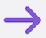

-

Sluit goed aan bij haar lesboeken
We zijn fan van WRTS. Anne is 14 jaar en gebruikt de oefentoetsen en uitlegvideo’s voor Frans, biologie en wiskunde. Ik maakte me eerst zorgen of het allemaal wel goed aansloot bij haar lesboeken. Laatst kwam Anne zelfs thuis met een 8 voor bio!
–
Marlies, Hoorn
-
handige tool voor woordjes leren
Super handige tool voor het leren van woorden, begrippen etc. Otis is 13 jaar en gebruikt het altijd voordat hij toetsen heeft. Verder een vriendelijke en snelle klantenservice die zaken goed afhandelt.
–
Diederik, Amsterdam
-

Erg handig voor talen maar ook voor wiskunde
Jaap is 12 jaar en gebruikte WRTS aanvankelijk alleen voor zijn woordjes Engels en Frans. Maar nu leert hij ook voor wiskunde dankzij de oefentoetsen en uitlegvideo’s. Erg handig voor talen maar ook voor wiskunde.
–
Peter, Abcoude
Hogere cijfers voor
Duits
Nask
economie
Nederlands
wiskunde
Engels
Biologie
Frans
Maak oefenvragen of oefentoetsen, bekijk uitlegvideo’s, leer woordjes gratis en chat met tutoren.
Gratis registerenWat zeggen onze fans
4.3
591 reviews
Woordjes leren
Woordjes leren saai? Niet als je dat voortaan met WRTS doet. Met de verschillende overhooropties kun je uitgebreid en onbeperkt je woordjes en begrippen oefenen. Op ons platform staan de officiële woorden- en begrippenlijsten uit jouw lesboeken voor je klaar. Dat scheelt je enorm veel werk met overtypen en je leert precies wat je moet leren.
Meer over woordjes leren000.000
samenvattingen gelezen
00.000
uitlegvideo's bekeken
000.000
oefenvragen en oefentoetsen gemaakt